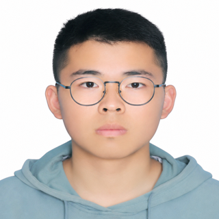
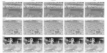
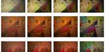
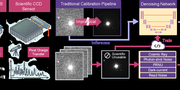
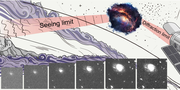
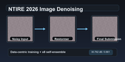
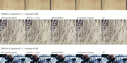

 |
Xining Ge |
I am Xining Ge, a student at Hangzhou Dianzi University. My research interests include low-level computer vision, image restoration, computational imaging, and domain-specific visual perception. My recent work focuses on remote sensing infrared image super-resolution, night-time image dehazing, astronomical denoising, and restoration-oriented inference pipelines.
I am also particularly interested in astronomical imaging and vision methods for scientific discovery, especially how restoration and generative techniques can help recover weak structures from noisy observational data.
 |
Dual-Branch Remote Sensing Infrared Image Super-Resolution |
 |
CLIP-Guided Data Augmentation for Night-Time Image Dehazing |
 |
Denoising the Deep Sky: Physics-Based CCD Noise Formation for Astronomical Imaging |
 |
FluxFlow: Conservative Flow-Matching for Astronomical Image Super-Resolution |
 |
Beyond Model Design: Data-Centric Training and Self-Ensemble for Gaussian Color Image Denoising |
 |
Training-Free Model Ensemble for Single-Image Super-Resolution via Strong-Branch Compensation |